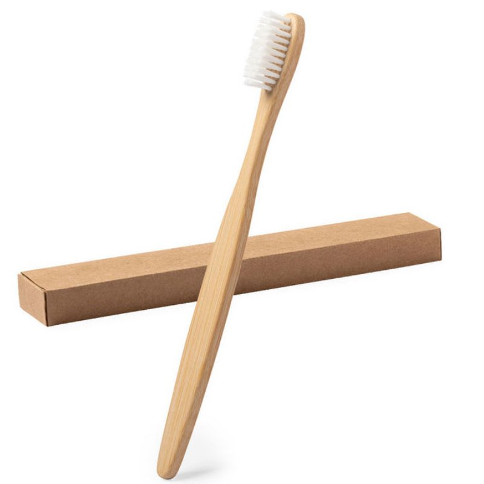
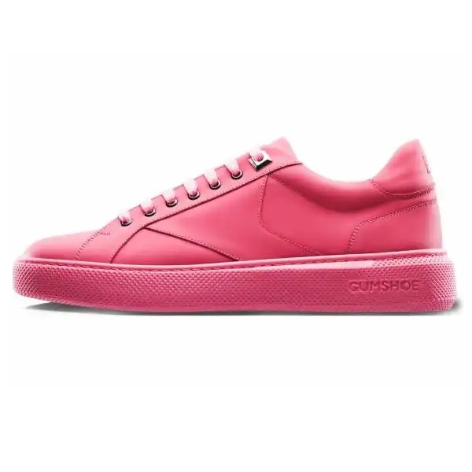
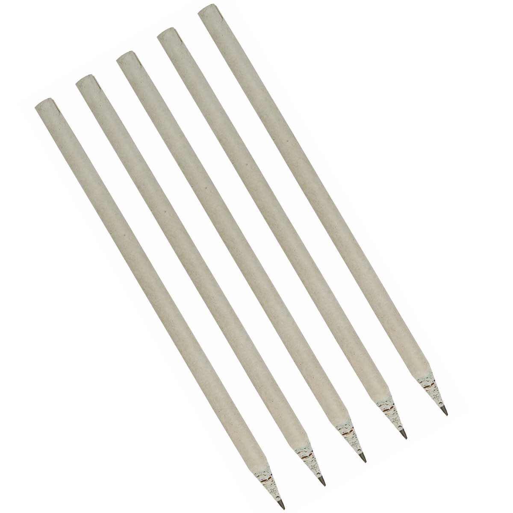
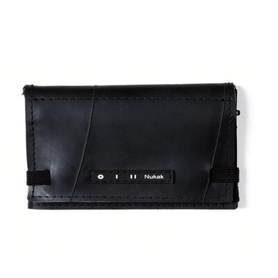
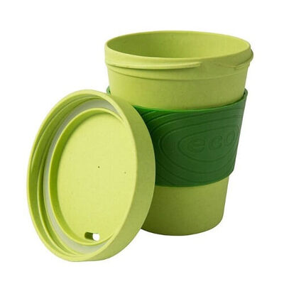
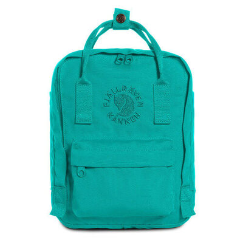
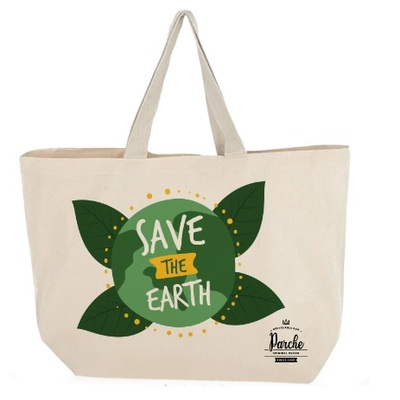
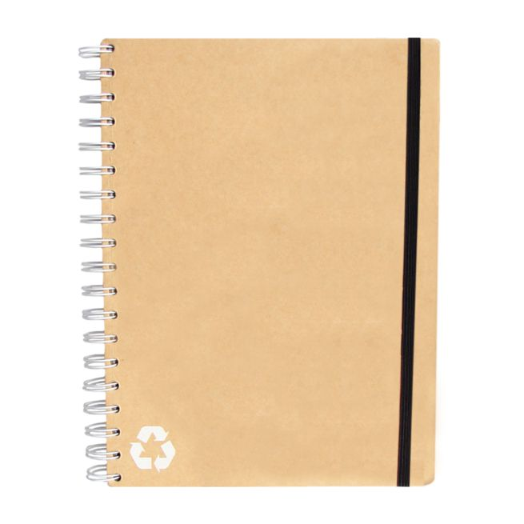
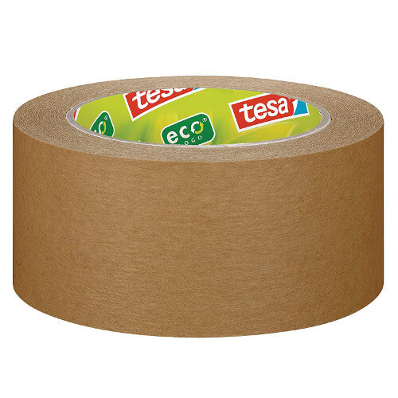

Productos obtenidos del reciclaje.
Existen una amplia variedad de artículos diseñados para reducir tu huella ecológica y contribuir a un futuro más sostenible. Desde bolsas de tela reutilizables hasta botellas de agua de acero inoxidable. Cada vez es más fácil encontrar productos que tienen su origen en los contenedores de reciclaje, y la creatividad no tiene límites en este campo, como vamos a comprobar en esta galería.

Eco-cepillos
Cepillos de dientes de bambú y Nylon.

Gumshoes
Zapatos con suelas de chicles.

Ecolápices
Lápices ecológicos de papel periódico.

Carteras veganas
Carteras de materiales reciclables.

Vasos biodegradables
Vasos hechos de fibra de bambú.

Mochilas ecológicas
Mochilas de plástico reciclado.

Bolsas ecológicas
Bolsas hechas de fibras naturales.

Libretas ecológicas
Libretas de papel reciclado.

Cintas de embalaje ecológicas
Cintas de materiales biodegradables.